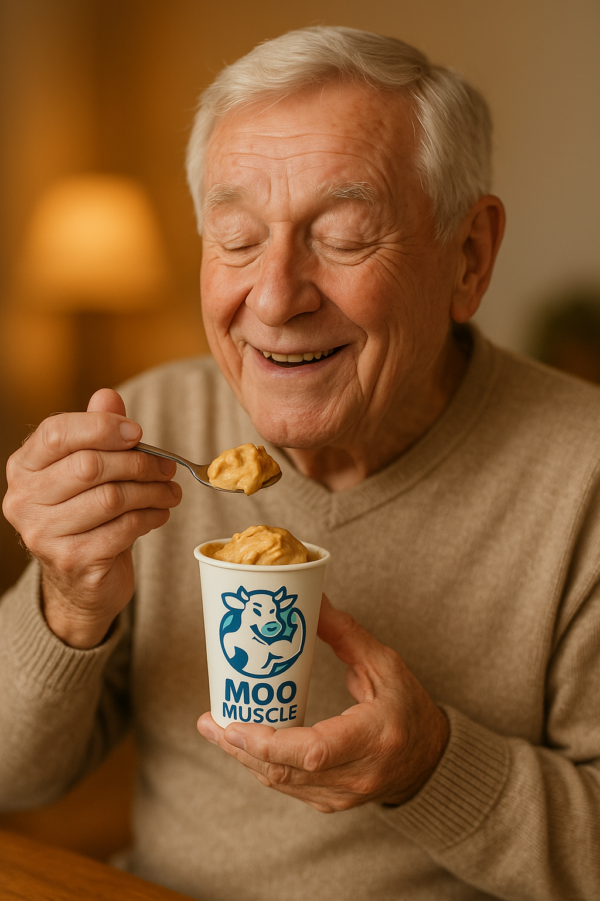

About Us
Moo Muscle is a scientifically developed high-protein dulce de leche ice cream designed specifically for older adults. Our mission is to provide delicious, nutritious, and easy-to-consume desserts that support muscle maintenance and overall health in the elderly.
Our Product
Our ice cream is enriched with whey protein and fortified with essential vitamins and minerals, making it ideal for those at risk of age-related muscle loss (sarcopenia). It features a smooth, easy-to-swallow texture and is made with premium Irish dairy.
- High protein content with optimized leucine levels
- Scientifically validated for digestibility in older adults
- Delicious dulce de leche flavor
- Suitable for mild swallowing difficulties
Science Behind the Product
Our high-protein dulce de leche ice cream is backed by peer-reviewed scientific research. Key findings include:
- High Protein & Amino Acid Content: Whey protein-enriched desserts contain nearly three times the protein and essential amino acids—especially leucine—compared to standard dulce de leche. Leucine content is critical for muscle protein synthesis, which is essential for combating sarcopenia in older adults.
- Excellent Digestibility: Both whey protein isolate (WPI) and whey protein hydrolysate (WPH) enriched desserts achieve over 95% protein digestibility, even under simulated older adult gastrointestinal conditions. The digestible indispensable amino acid ratio (DIAAR%) is ≥100% for all essential amino acids, indicating excellent protein quality.
- Favorable Texture for Older Adults: The enriched desserts are significantly less firm and less adhesive than traditional dulce de leche, making them easier and safer to eat for individuals with reduced chewing strength or swallowing difficulties.
- Age-Specific Digestive Benefits: In vitro digestion models show that whey protein-enriched desserts maintain high digestibility even under older adult digestive conditions, with less impact from age-related changes in gastric pH and enzyme activity.
- Lower Sugar Content: The protein-enriched formulations have up to 28% less sugar than conventional dulce de leche, offering additional health benefits.
- Microstructural Advantages: The protein-enriched desserts form smaller, less dense protein aggregates during digestion, which further supports ease of consumption and digestion in older adults.
These findings demonstrate that our product is not only nutritious but also tailored to the specific needs and preferences of older adults, supporting muscle health and overall well-being[1].
Contact Us
For inquiries, partnerships, or orders, please email us at info@moomuscle.com.